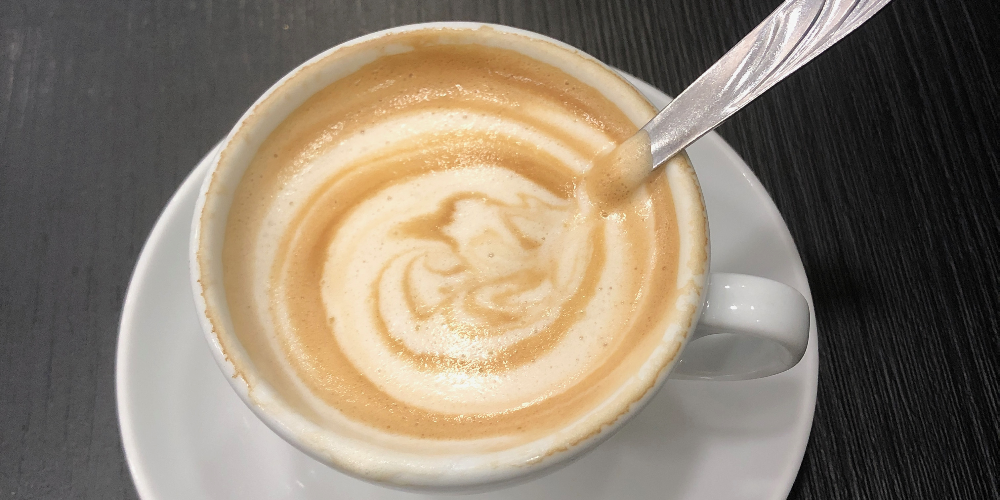

Running is a passion I built on when I was 13. I have 10 years of competitive experience in track & field, competing as high as the collegiate level in the NCAA Division. My main event was high jump. Below is a list of some of my highest achievements:

Photography is an everyday thought. I push the boundaries between mobile photography and dedicated camera photography, capturing moments with family & friends, landscapes, portraits, and everything in between. By no means do I consider myself a professional photographer, but I continue to improve my shooting capabilities and editing skills.
I am a self-proclaimed Caffeine Mixologist. I have traveled the world and honed my skills in different forms of cultural brewing methods, ranging from the traditional mixture of espresso and steamed milk known as the Italian Cappuccino to the fifth-ranking-in-the-world coffee from Honduras. My favorite morning activity is to test different brewing methods; my favorite brew method is pour-over.